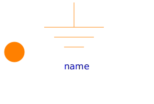
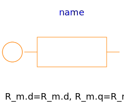
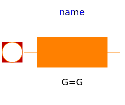
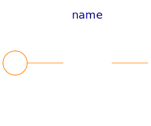

Basic components of the FundamentalWave library for modeling magnetic circuits. Machine specific components are located at Machines.Components.
| Name | Description |
|---|---|
|  Ground | Magnetic ground |
|  Reluctance | Salient reluctance |
|  EddyCurrent | Constant loss model under sinusoidal magnetic conditions |
|
|
Single phase electro magnetic converter |
|
|
Multi phase electro magnetic converter |
|  Idle | Salient reluctance |
| Salient reluctance |